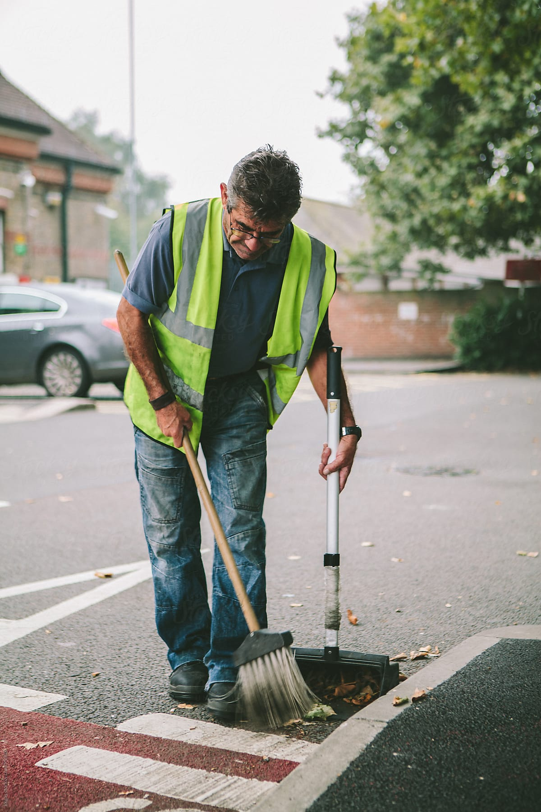
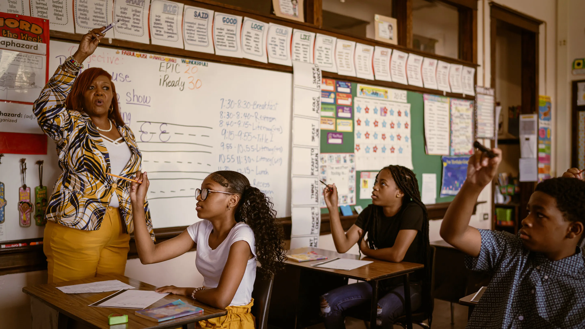
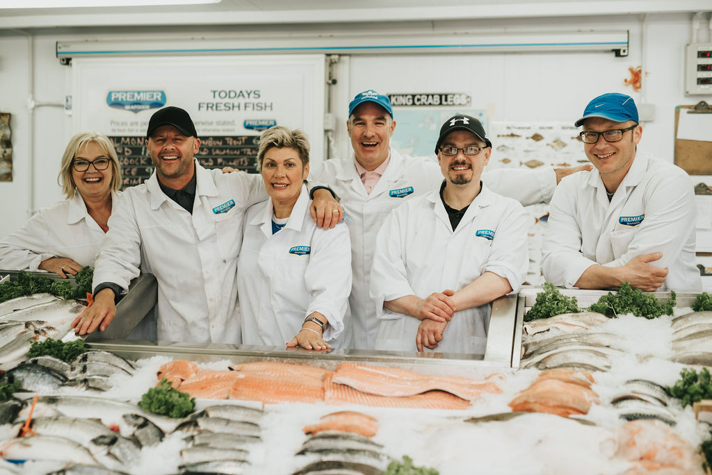

act to help cats
This page is your guide to taking action for stray cats, proposing creative low-cost solutions to ease their daily struggles while caring for the environment
do it yourself
start now
simple crafts and methods to help solve cats struggles, while promoting sustainibility through recycling.
Water bowls
Turn a used plastic bottle/jug into a clean water bowl for stray cats, helping keep them hydrated
cats food recipes
Simple, low-cost, and healthy recipes made from everyday ingredients—perfect for feeding both strays and pets
strays shelter
Easy, low-cost shelters to keep stray cats safe, warm, and protected from harsh weather
special aids
save a cat's life
simple ways to help treat cats ilnesses yourself with simple materials.

community involvement
Talk to locals and community members to encourage them to help protect stray cats—every small action makes a difference. (Tap on the images to see how each community member can contribute!)
butchers can leave meat scraps for cats
cleaners can recycle boxes and plastic bottles/jugs to make shelters and water bowls
baristas can place water bowls outside

grocery sellers can give cats water and food
teachers should teach students to help and care for cats
fishermen can leave fish scraps for cats
doctors can help injured cats and raise awareness about their health and well-being

provide clean water bowls ▾
Stores and cafés can place clean water bowls outside. Refill daily. This not only keeps cats hydrated but also builds a positive image of the business within the community.
Turning Waste into Care ▾
Food shops can give leftover meat or fish to cats instead of throwing it away. Fresh portions outside help reduce hunger and waste
Small shaded shelters ▾
Shops can place shaded boxes or covered crates near their doors. These give cats safety from heat, rain, and street danger
Become A Volunteer
join a community of international volunteers, and help bring Pawareness to your country. Together, we rescue cats, raise awareness, and promote sustainability.
apply